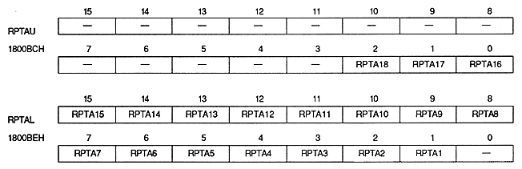

| RAXSTRE | 1800B2H | Bit 0 | Rotation parameter A for Xst |
| RBXSTRE | 1800B2H | Bit 8 | Rotation parameter B for Xst |
| RAYSTRE | 1800B2H | Bit 1 | For Yst of rotation parameter A |
| RBYSTRE | 1800B2H | Bit 9 | For Yst of rotation parameter B |
| RAKASTRE | 1800B2H | Bit 2 | Rotation parameter A for KAst |
| RBKASTRE | 1800B2H | Bit 10 | Rotation parameter B for KAst |
| RxSTRE | Process |
| 0 | Do not read the specified parameter on that line |
| 1 | Read specified parameter on that line |
When this bit is set to 1, the parameter specified when reading the next rotation parameter is also read, and this bit is cleared to 0 at the same time. Therefore, if you want to read parameters for each line, set this bit to 1 for each line.
